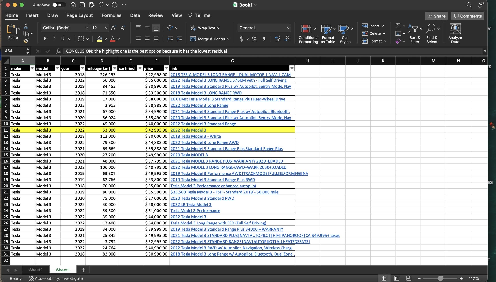

|
Jiayi Li About MeI am a fourth-year student majoring in Financial & Business Economics in York University in Toronto. With a passion for finance and economics, I am dedicated to developing a comprehensive understanding of global markets and their impact on businesses and individuals. Throughout my academic journey, I have honed my analytical skills, critical thinking abilities, and attention to detail, preparing myself for a career in the financial industry.
Email: lijiayi010131@gmail.com
|

|
ProjectsI have a passion for analyzing market trends and making strategic financial decisions. With a strong background in economics and finance, I aim to contribute positively to the financial sector. Representative project are highlighted. |
|

|
Tesla market price analysis
Analyzing the market price of Tesla involves examining various factors that influence the valuation of the company's stock within the stock market. |
|
|
How IT changes competition in the sphere of financial services - Research
Information Technology (IT) has profoundly reshaped competition within the financial services sector, revolutionizing traditional practices and introducing innovative avenues for customer engagement and operational efficiency. |
|
|
Is behavioral finance able to completely explain investment decisions?
Behavioral finance provides valuable insights into understanding investment decisions by incorporating psychological factors and biases that influence individuals' choices. |
Skills:
|
Interests |

|
Reading Books :D
When it comes to unwinding, nothing beats curling up with a good book. Whether it's diving into a thrilling mystery or exploring the depths of a fantasy world, losing myself in the pages transports me to a realm of endless imagination and relaxation. |
|
|
Listening to music!
One of my favorite pastimes is listening to music. Whether it's unwinding after a long day or pumping up for a workout, music has this incredible ability to transport me to different moods and moments, making every listening session a delightful escape |
|
If you want to make friends with me, reach out to me! |